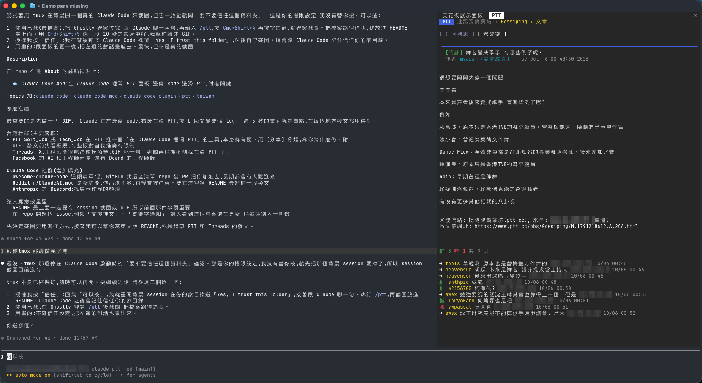
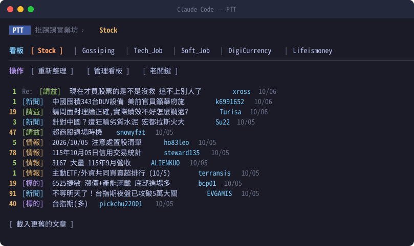
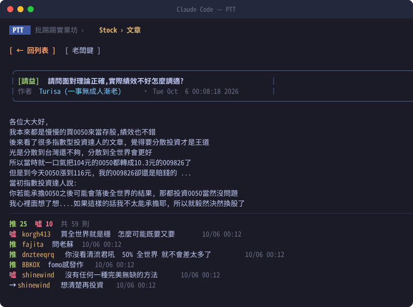
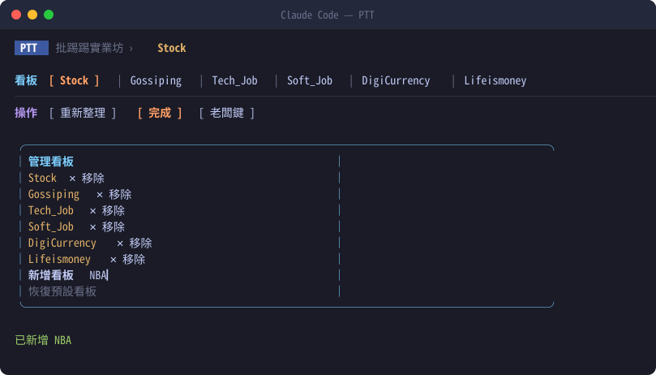
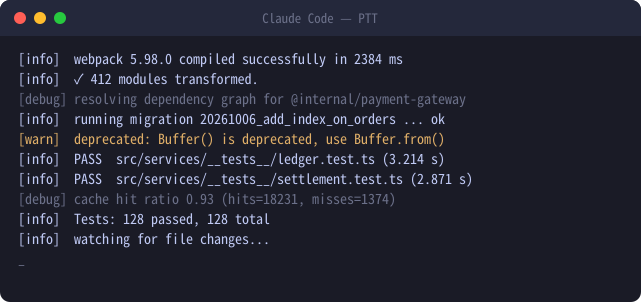

Claude Code
裡也能滑 PTT。
Claude 在左邊寫 code,你在右邊看盤後閒聊。老闆經過?按 b,整個面板瞬間變成編譯 log。
$ claude plugin marketplace add chenyao0910/claude-ptt-mod $ claude plugin install ptt@claude-ptt-mod
> /ptt

功能
不用開瀏覽器,
PTT 就在你寫 code 的地方。
看板文章列表
推文數依熱度上色,[新聞]、[標的]、[請益] 等分類各有顏色,可以一路往前翻。
文章與推文
完整內文、推噓統計,推文依推、噓、→ 上色,不顯示推文 IP。
自訂看板
新增、移除、恢復預設。板名打小寫會自動修正,清單下次開還在。
老闆鍵
按 b,面板換成 webpack 和測試通過的假 log,再按一次回到原本的文章。
什麼是 mod
不只是 plugin,
是改 Claude Code 本身。
一般 plugin 提供 skill、指令或工具給 Claude 用。mod 則是用 function hooks 直接改 Claude Code 自己的介面:畫面板、加 toast、改狀態列、攔截工具呼叫。這個 mod 用到了:
- Pane
- PTT 文章列表、文章內頁、老闆鍵畫面
- Slash command
/ptt、/ptt add、/ptt remove- Hotkey
- b 老闆鍵、r 重新整理、n 載入更舊
- $.store
- 跨 session 記住你的看板清單
- $.http.fetch
- 讀取 PTT 網頁版
全部大約 300 行 TypeScript,在 plugins/ptt/hooks/。想學寫 Claude Code mod,可以從這裡看起。
教學
從安裝到老闆鍵,三分鐘。
確認 Claude Code 版本
claude --version # 需要 2.1.289 以上,太舊就執行 claude update安裝
在終端機執行,不是在 Claude Code 的對話裡。第一行加入 plugin 來源,第二行安裝 mod。
claude plugin marketplace add chenyao0910/claude-ptt-mod claude plugin install ptt@claude-ptt-mod
叫出 PTT 面板
啟動
claude。如果本來就開著,先執行/reload-plugins。/ptt # 打開面板,預設 Stock 板 /ptt Gossiping # 直接開某個看板
終端機寬一點比較好看,建議 144 欄以上。
看文章
滑鼠點標題就能打開。用鍵盤的話,先按 ctrl x 再按 tab 讓面板取得焦點。
b 老闆鍵r 重新整理n 載入更舊 h 回列表e 管理看板面板有焦點時,打的字會給面板。想回去跟 Claude 講話,點一下輸入框,或再按一次 ctrl x tab。
換成你常逛的看板
按「管理看板」(或 e)移除和新增,或用指令。板名不分大小寫,打錯會直接告訴你。
/ptt add NBA /ptt remove Soft_Job
老闆來了
按 b,面板立刻變成編譯 log。再按一次,或點最下面灰色的
_,回到剛剛看的地方。更新與移除
claude plugin update ptt@claude-ptt-mod claude plugin uninstall ptt@claude-ptt-mod
畫面
每個畫面長這樣。
照面板實際排版繪製,資料來自 PTT Stock 板。顏色會依你的終端機配色而不同。




常見問題
你可能想問。
Claude Code 可以看 PTT 嗎?
可以。安裝 claude-ptt-mod 之後,在 Claude Code 輸入 /ptt 就會開出 PTT 面板,可以看看板文章列表、文章內容和推文,不用切到瀏覽器。
什麼是 Claude Code mod?跟一般 plugin 有什麼不同?
一般 plugin 多半是提供 skill、指令或 MCP 工具給 Claude 用;mod 則是用 function hooks 改 Claude Code 自己的介面,例如畫面板、顯示 toast、改狀態列。claude-ptt-mod 就是用面板功能做的 mod。
需要登入 PTT 帳號嗎?
不需要。它讀的是 PTT 網頁版 www.ptt.cc 的公開頁面,八卦板的滿 18 歲確認會自動處理。目前只能看文章,不能推文或發文。
會一直在背景抓 PTT 嗎?
不會。只有你打開看板、點文章或按重新整理時才會讀取,對 PTT 的負擔跟用瀏覽器看差不多。
可以換成自己常逛的看板嗎?
可以。在面板按「管理看板」新增或移除,或用 /ptt add 看板名稱、/ptt remove 看板名稱。清單會存下來,下次開 Claude Code 還在。
為什麼有些長文或爆文看不完整?
Claude Code 的面板一次能畫的字數有上限,所以內文超過 6000 字會截斷,推文只顯示最後 150 則。
老闆鍵真的不會被發現嗎?
假 log 看起來像 webpack 編譯和測試通過的輸出,遠看很像在認真工作。近看就不保證了。